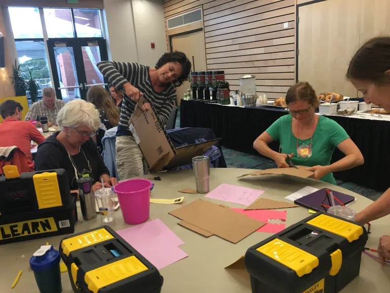
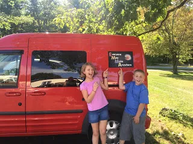

Create Make Learn started as a unique week-long summer institute for Vermont educators designed by Lucie deLaBruere in 2012.
 In 2013, Lucie and her husband, Craig Lyndes, started traveling around the country in their 1983 Bluebird bus & mobile makerspace in search of inspiration from creatives around the country to bring back to our Create Make Learn community.Over the years, Create Make Learn has evolved into comprehensive professional development opportunities, school residencies, and a supportive community that continues to inspire educators to design amazing learning opportunities for their students.
Join us and you'll soon be connected to a wealth of community of creative colleagues willing to share resources that inspire us as we design amazing hands-on learning opportunities for our students.